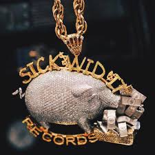
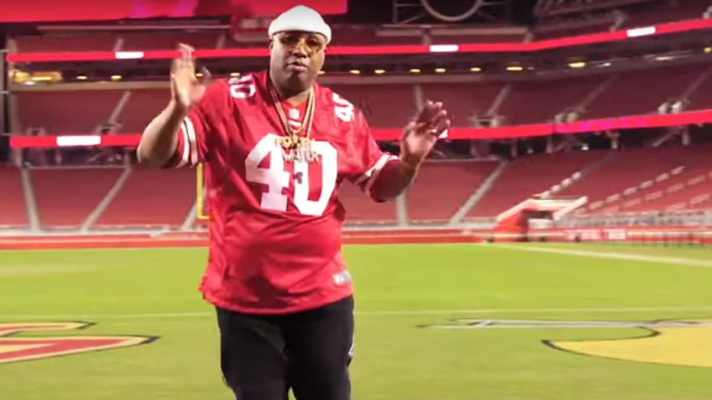
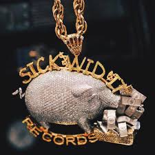
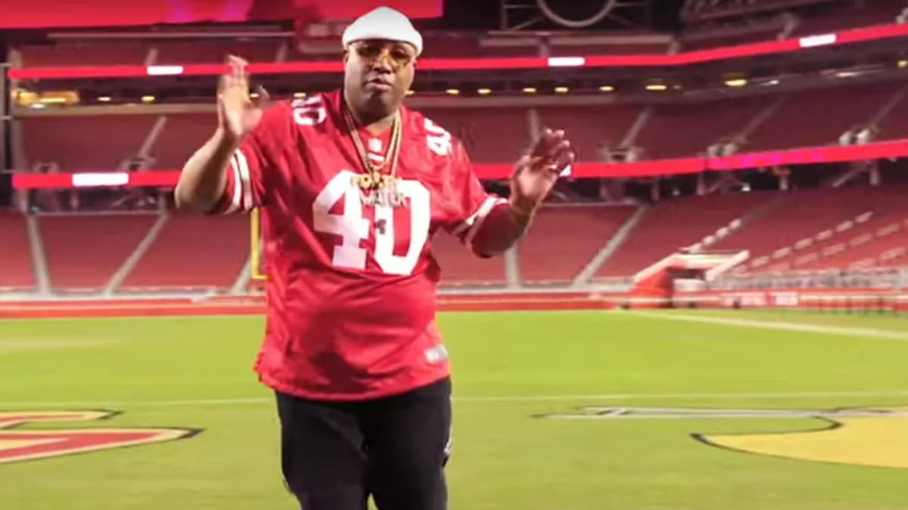
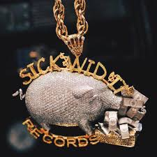
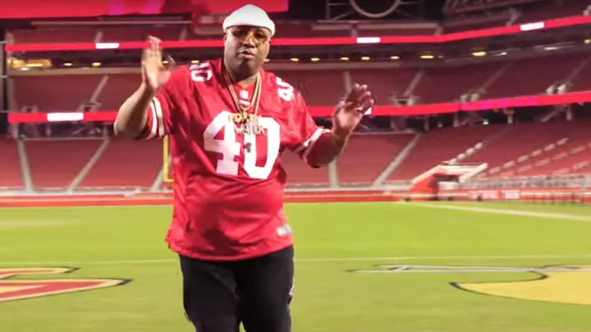
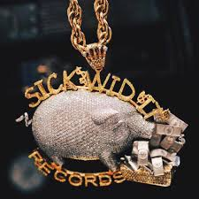
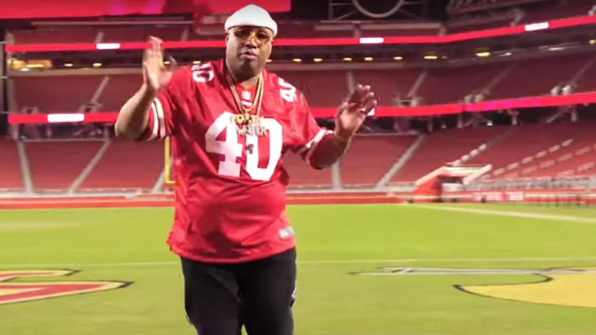

E-40 is my favorite American rapper in the Bay Area. He has created many songs that I always listen too and he inspire me by the lyrics he saying and created album covers but the one that stood out to me is “My Ghetto Report Card” and his ability to blend unique lyricism with the Bay Area culture has always resonated with me. Also his influential role in West Coast hip-hop, distinctive style into sports, and long-standing contribution to the music industry. His engagement reflects his passion for athletes and connection to the local sports community here in the Bay Area.
Japanese video game designer and director Satoshi Tajiri who is the creator of Pokemon and has created a game for everyone to enjoy. His journey as a creator is pretty inspiring, especially considering how he transformed a childhood hobby into a global phenomenon for all people to battle and share the game. He inspire me because he used to be a insect collector in his childhood and I used to collect and buy Pokemon cards to battle, trade with other people, and have fun with it. What also inspires me about him is the creativity and passion he brought to the game when the game came out in the 1900s and as of today people all over the world are still playing different kinds of Pokemon games. I wasn't alive when Pokemon came out, but the first Pokemon game I played was on the Nintendo 3DS.
John Cena a multifaceted individual who has made a significant impact in various aspects of his career. He is known for acting in movies and as a professional wrestler he influenced a lot of people with his charisma and character as a person. Also, his dedication was a big cause to the Make-A-Wish Foundation to the kids that love him and a lot of kids have him as a hero. He inspires me by helping and connecting to the kids who show up to him as a positive influence and have a platform that shows who he is as a person.
__________________________________________________________________________________________________________________________________________________________________________________________________________________________________________________________________________________